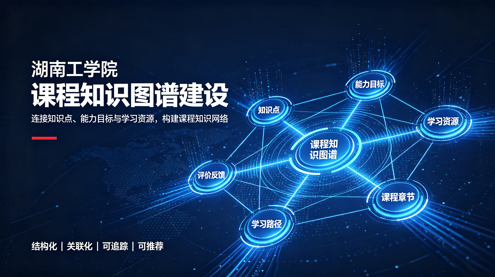

湖南工学院《课程知识图谱建设》
2024-12-24

围绕课程知识图谱建设梳理课程知识结构与关联关系，建设可视化、可检索、可持续扩展的知识。
本案例围绕“湖南工学院《课程知识图谱建设》”开展课程知识图谱建设。项目从课程章节、核心概念、知识点与学习任务出发，梳理知识之间的前后依赖、关联关系和层级结构，并将课程资源与对应知识节点进行连接。建设过程关注知识结构的准确表达、节点颗粒度和资源匹配度，使教师能够更清晰地组织课程内容，学生也能通过可视化关系理解知识脉络。
2024-12-24

围绕课程知识图谱建设梳理课程知识结构与关联关系，建设可视化、可检索、可持续扩展的知识。
本案例围绕“湖南工学院《课程知识图谱建设》”开展课程知识图谱建设。项目从课程章节、核心概念、知识点与学习任务出发，梳理知识之间的前后依赖、关联关系和层级结构，并将课程资源与对应知识节点进行连接。建设过程关注知识结构的准确表达、节点颗粒度和资源匹配度，使教师能够更清晰地组织课程内容，学生也能通过可视化关系理解知识脉络。